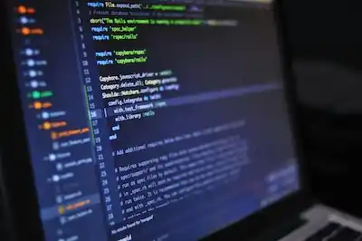

La programación es el proceso de crear un conjunto de instrucciones ordenadas que le indican a una computadora o dispositivo cómo realizar una tarea específica.
Leer másLa logística es el conjunto de procesos y estrategias que planifican, ejecutan y controlan el flujo de bienes, servicios e información desde su punto de origen hasta el consumidor final.
Leer másLa contabilidad es la disciplina de las ciencias económicas que se encarga de registrar, clasificar, resumir e interpretar todas las operaciones financieras y económicas que realiza una empresa u organización
Leer másLa carrera de Alimentos y Bebidas es un programa de formación técnica (generalmente a nivel bachillerato o profesional técnico) enfocado en la industria gastronómica y de la hospitalidad
Leer másLa mecánica industrial es la rama de la ingeniería y la técnica dedicada al diseño, fabricación, instalación, operación, mantenimiento y reparación de las máquinas y sistemas utilizados en los procesos de producción industrial.
Leer másLa carrera de Técnico en Servicios de Hospedaje es un programa de bachillerato tecnológico (como el ofrecido por la DGETI o CECyTE) que capacita a los estudiantes para operar, coordinar y administrar áreas clave de la industria hotelera y turística.
Leer másLa carrera de ciberseguridad (o Ingeniería en Ciberseguridad) es una disciplina técnico-científica que forma profesionales para diseñar, implementar y gestionar mecanismos de defensa digital con el fin de proteger la infraestructura tecnológica, redes, sistemas operativos, servidores, la nube y la información confidencial frente a accesos no autorizados, fraudes y ataques maliciosos.La carrera de ciberseguridad (o Ingeniería en Ciberseguridad) es una disciplina técnico-científica que forma profesionales para diseñar, implementar y gestionar mecanismos de defensa digital con el fin de proteger la infraestructura tecnológica, redes, sistemas operativos, servidores, la nube y la información confidencial frente a accesos no autorizados, fraudes y ataques maliciosos.
Leer másLa carrera de Inteligencia Artificial (IA) —frecuentemente ofrecida como Ingeniería en Inteligencia Artificial, Ciencia de Datos o carreras afines— es una disciplina universitaria que forma profesionistas para diseñar, programar y entrenar sistemas capaces de aprender de los datos, reconocer patrones, automatizar procesos y tomar decisiones autónomas
Leer másBienvenido a la comunidad escolar del CBTis 258. Aquí encontrarás información sobre actividades, eventos y noticias relevantes.
Explora nuestras oportunidades de aprendizaje dual, vinculación con la industria y programas de prácticas profesionales.